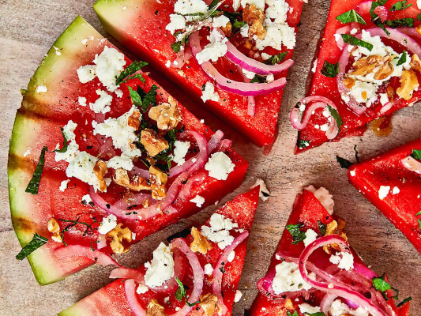

Cinnamon Roll Oatmeal

Description
This grilled watermelon feta pizza is your showstopper for the summer.
Grill a thick slice of watermelon, top with a quick-pickled onion, feta,
and walnuts for a watermelon salad like you've never had.
Ingredients
- 1/2 red onion thinly sliced
- 1/4 cup red wine vinegar
- 2 tablespoons sugar
- 1/2 teaspoon kosher salt
- 1 tablespoon extra virgin olive oil, divided
- 1 (1 1/2-inch thick) slice watermelon, from a large
seedless watermelon
- 1/4 cup crumbled feta cheese
- 2 tablespoons chopped toasted walnuts
- 1 tablespoon chopped fresh mint
- 1/4 teaspoon freshly cracked black pepper
Steps
- Combine onions, vinegar, sugar, and salt in a
small bowl and stir well. Let stand 15 to 20 minutes.
- Heat a grill or large grill pan over high heat and lightly
coat grates with cooking spray. Brush one side of
watermelon lightly with olive oil. Place watermelon,
oiled side down, on grill and cook, undisturbed, just
until grill marks appear, about 2 minutes. Remove from
grill; place grilled side up onto a large cutting board.
- Cut watermelon into 6 wedges; push wedges together to
maintain a circular shape. Top evenly with feta cheese,
walnuts, mint, and pepper, and drizzle with remaining
olive oil.